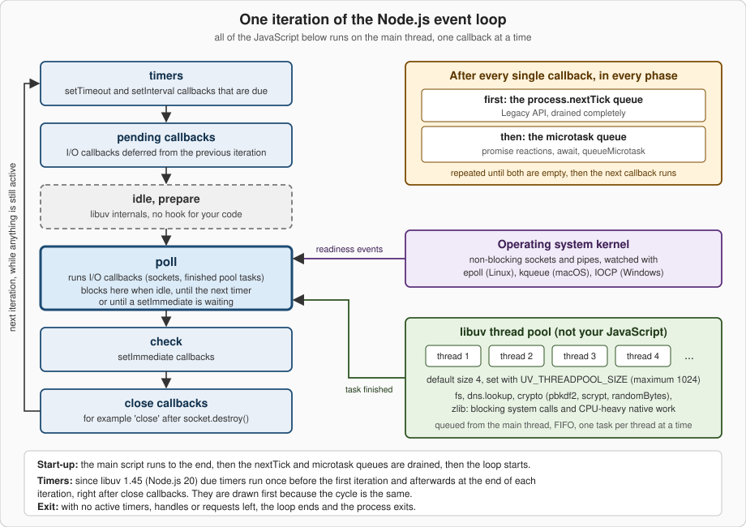

The Event Loop
|
This content was generated with the assistance of AI and should be verified against the official documentation before being relied on in production. |
This page is written against Node.js 26 (26.10.0, released 2026-09-21, the Current line that becomes LTS on 2026-10-28), with the differences
of Node.js 24 "Krypton" (24.21.0, Active LTS) and Node.js 22 "Jod" (22.23.3, Maintenance) called out; versions and stability levels were
checked against the official documentation on 2026-10-03, and every example below was run on all three lines unless the text says
otherwise. The event loop is the mechanism that lets one JavaScript thread serve thousands of connections: it waits for work that the
operating system or a helper thread has finished, and runs the matching callback. Most of it is implemented by libuv, the C library
Node.js is built on, so the loop itself is not a JavaScript API; what you touch are the APIs that feed it. Their stability levels differ:
the node:timers module (setTimeout(), setInterval(), setImmediate() and their clear functions) is Stability 2 (Stable);
queueMicrotask() is a stable global; process.nextTick() is Stability 3 (Legacy) and the documentation tells you to use
queueMicrotask() instead; process.getActiveResourcesInfo() and the node:perf_hooks module are Stable; the "refable" protocol
behind process.ref() and process.unref() is Stability 1 (Experimental); UV_THREADPOOL_SIZE is an environment variable documented
with the command-line options. For the JavaScript-language side (promises, async functions, the browser’s task queues) read
Asynchronous JavaScript first; this page owns what is specific to Node.js:
the libuv phases, process.nextTick(), setImmediate() and the thread pool. The running scenario is the Bookshelf application that
grows across this section, whose architecture is described in Introduction & Architecture.
The stability and version map
| API or setting | Stability (Node.js 26 docs) | Version notes |
|---|---|---|
|
2 Stable ( |
|
|
Stable global |
Added in v11.0.0 (first as an experimental implementation). |
|
3 Legacy |
Marked Legacy in v22.7.0 and v20.18.0, so it is Legacy on every supported line; extra arguments are supported since v1.8.1. |
|
Stable |
Stable since v24.0.0 and v22.16.0 (experimental before). |
|
1 Experimental |
Added in v23.6.0 and v22.14.0. |
|
Stable ( |
The |
|
Stable ( |
Also exported as |
|
Environment variable |
Default 4, absolute maximum 1024 (libuv 1.30.0 raised it from 128). |
What the event loop is
Node.js runs your JavaScript on one thread, the main thread. When that code starts something slow (reading a file, waiting for a network reply, a timer), it does not wait: it hands the work to the operating system or to a helper thread and registers a callback. When the main script has run to the end, Node.js enters the event loop. The loop repeatedly asks "has anything finished?" and runs the callbacks of the things that did, one callback at a time, always to completion. When nothing is left that could still produce a callback, the loop ends and the process exits. The Node.js documentation phrases the point like this: the event loop is what allows Node.js to perform non-blocking I/O operations, despite the fact that a single JavaScript thread is used by default, by offloading operations to the system kernel whenever possible.
Three layers cooperate, and keeping them apart removes most of the confusion:
-
V8 runs JavaScript and owns the microtask queue (promise reactions,
queueMicrotask()). -
Node.js adds the
process.nextTick()queue and decides when to drain both queues. -
libuv owns the loop proper: the phases, the timer heap, the poller that watches sockets, and the thread pool.
The phases of one iteration
libuv runs one iteration as an ordered list of phases. Every phase has a first-in, first-out queue of callbacks. When the loop enters a phase it runs callbacks from that queue until the queue is empty or a system-dependent limit is reached, then moves to the next phase. Because the same list repeats, the picture is a cycle.

| Phase | Runs | Typical sources |
|---|---|---|
timers |
Callbacks of timers whose threshold has passed. |
|
pending callbacks |
Some I/O callbacks that the system deferred to the next iteration. |
Certain TCP errors, for example |
idle, prepare |
Internal libuv hooks, run on every iteration while active. There is nothing for your code here. |
Node.js internals |
poll |
Calculates how long to block, waits for I/O, then runs the I/O callbacks that arrived. Almost every I/O callback runs here. |
Sockets, pipes, finished thread pool tasks, child process events |
check |
Callbacks scheduled right after the poll phase. |
|
close callbacks |
Callbacks for handles that were closed abruptly. |
|
The poll phase decides how long the process sleeps
Poll is where an idle server spends its life. Before blocking, libuv computes a timeout: zero if the loop is going to stop, if idle or
closing handles are pending, or if there is nothing active to wait for; otherwise the time until the closest timer, or "forever" when no
timer exists. Then it blocks in the platform poller (epoll on Linux, kqueue on macOS and the BSDs, event ports on SunOS, IOCP on
Windows) and runs the callbacks of every socket that became readable or writable. Two consequences follow from the Learn article:
-
If the poll queue is empty and a
setImmediate()callback is waiting, the loop leaves poll immediately and goes to the check phase instead of sleeping. -
If nothing is waiting, the loop sleeps until a callback arrives or the closest timer is due, and then wraps around to the timers phase.
So the poll phase, indirectly, controls when timers run: a timer is a threshold, not an appointment.
import { monitorEventLoopDelay, performance } from 'node:perf_hooks';
const histogram = monitorEventLoopDelay({ resolution: 10 });
histogram.enable();
const before = performance.eventLoopUtilization();
// A callback that holds the loop thread for 200 ms.
setTimeout(() => {
const end = performance.now() + 200;
while (performance.now() < end) { /* busy */ }
}, 100);
setTimeout(() => {
histogram.disable();
const { utilization } = performance.eventLoopUtilization(before);
console.log(`max delay : ${(histogram.max / 1e6).toFixed(0)} ms`);
console.log(`p50 delay : ${(histogram.percentile(50) / 1e6).toFixed(0)} ms`);
console.log(`utilization: ${utilization.toFixed(2)}`);
}, 500);max delay : 211 ms
p50 delay : 11 ms
utilization: 0.40The histogram samples with a timer every 10 ms (resolution), so even a healthy loop reports a floor of about that value; the 200 ms
callback shows up as a maximum of about 210 ms, and the loop spent 40 percent of the 500 ms window running JavaScript, which is how a
timer ends up late: the loop was simply busy. Setting samplePerIteration: true (added in v26.5.0 and v24.19.0; not available on Node.js 22) samples once per loop iteration
instead of with a timer; the two modes give very different numbers and must not be compared. More on measuring in
Don’t Block the Event Loop and
Profiling & Performance.
Timers: when exactly do they run?
A timer callback runs as soon as it can be scheduled after its time has passed, but the operating system scheduler or other
callbacks can delay it. The setTimeout() documentation adds that a delay larger than 2147483647 or smaller than 1, or NaN, becomes 1 ms,
so setTimeout(fn, 0) really means "after about one millisecond". Since libuv 1.45.0 (shipped from Node.js 20, so in every supported
line) the loop runs due timers once before it enters the first iteration, and afterwards at the end of each iteration, right after the
close callbacks. The Learn article still draws timers first, which is the same cycle seen from a different starting point. The change
affects how setImmediate() and timers interleave in edge cases; see below. The timers API itself is covered in
Timers.
The queues between callbacks: nextTick and microtasks
Two queues are not phases. After each callback returns to the loop (in any phase), Node.js first drains the process.nextTick() queue
completely, then drains the V8 microtask queue completely, and repeats until both are empty before the next callback may run. The
process.nextTick() documentation words it as: this queue is fully drained after the current operation on the JavaScript stack runs to
completion and before the event loop is allowed to continue. The microtask queue is the one that runs then, catch and finally
handlers of settled promises, the continuation of an await, and queueMicrotask() callbacks. Since Node.js 11 both queues are
drained between every individual timer and immediate callback; before that they were drained only once the whole phase queue had run.
The result is an ordering you can rely on, with one subtlety: where the code runs. A CommonJS main script is not inside a promise job, so
when it ends the nextTick queue is drained first and then the microtask queue. An ES module, however, is evaluated as part of
promise machinery, so the microtask queue is already being drained when the script ends, and microtasks therefore run before nextTick
callbacks.
import { nextTick } from 'node:process';
console.log('1 script start');
setTimeout(() => console.log('6 setTimeout 0'), 0);
setImmediate(() => console.log('7 setImmediate'));
Promise.resolve().then(() => console.log('4 promise then'));
queueMicrotask(() => console.log('5 queueMicrotask'));
nextTick(() => console.log('3 nextTick'));
console.log('2 script end');The same file in CommonJS only differs in its first line (const { nextTick } = require('node:process');). The leading numbers are the
order you can expect from synchronous code, nextTick and microtasks; they are not guaranteed for the last two lines, as explained in the
next section.
1 script start
2 script end
3 nextTick
4 promise then
5 queueMicrotask
7 setImmediate
6 setTimeout 01 script start
2 script end
4 promise then
5 queueMicrotask
3 nextTick
7 setImmediate
6 setTimeout 0Source: Node.js Learn: Understanding process.nextTick(), Node.js Learn: Understanding setImmediate(), Node.js API: Process (process.nextTick, queueMicrotask versus nextTick)
The first five lines were identical on every run and on all three lines; the last two are from a typical run on the test machine (see
the next section for why they can swap). The
Learn article on setImmediate() shows the same CommonJS-versus-ESM difference with a start, foo, bar, zoo, baz example; running
it gives start foo bar zoo baz as CommonJS and start bar foo zoo baz as an ES module on Node.js 26, 24 and 22.
// Two timers that expire together: microtasks and nextTicks run between them.
setTimeout(() => {
console.log('timer A');
Promise.resolve().then(() => console.log(' A: promise'));
process.nextTick(() => console.log(' A: nextTick'));
}, 0);
setTimeout(() => console.log('timer B'), 0);timer A
A: nextTick
A: promise
timer BChoosing between the four
| API | Runs | Queue | Use it for |
|---|---|---|---|
|
After the current operation, before promise reactions (CommonJS), before the loop continues |
|
Legacy. Kept for compatibility and for the rare case that needs to run before promise handlers. Accepts extra arguments. |
|
After the current operation, in the promise reaction queue |
V8 microtask queue |
The recommended replacement. Portable to browsers. A thrown error becomes an |
|
In the check phase of the current iteration |
Check queue (libuv) |
"After the I/O that is already waiting": splitting long work into slices, running something right after an I/O callback. |
|
In the timers phase once about 1 ms has elapsed |
Timer heap (libuv) |
When you really need a minimum delay. Not a reliable way to say "next". |
The documentation’s recommendation is blunt: for most userland use cases queueMicrotask() should be favoured over process.nextTick(),
and in simple scenarios it is a drop-in replacement. The Learn article on the event loop goes further and recommends setImmediate()
whenever you want to yield to the loop, because it is easier to reason about. The names are historical (nextTick fires more
immediately than setImmediate); renaming them would break a large share of npm, so they will not change.
Why nextTick exists: always-asynchronous APIs
process.nextTick() serves a design rule: an API must be either always synchronous or always asynchronous. An API that calls its callback
synchronously on some paths and asynchronously on others (colloquially "releasing Zalgo") makes the order of the caller’s own code
unpredictable. Node.js core uses the queue to defer, for example, argument-validation errors and the 'listening' event of a server so
that the caller has finished attaching listeners. The same effect is available from queueMicrotask() in new code, as the next example
shows: the cache hit is deferred, so both paths call back only after getTitle() has returned. A longer version that shows the broken
variant next to the fixed one is in Callbacks, Promises & async/await (Zalgo).
const cache = new Map([['dune', 'Dune (1965)']]);
// Always asynchronous: the cache hit is deferred with queueMicrotask(),
// so the callback never runs before the caller's next line.
function getTitle(id, callback) {
if (cache.has(id)) {
queueMicrotask(() => callback(null, cache.get(id)));
return;
}
setTimeout(() => callback(new Error(`unknown book: ${id}`)), 10); // stand-in for real I/O
}
for (const id of ['dune', 'missing']) {
let returned = false;
getTitle(id, (err, title) => {
console.log(`${id}: callback after return? ${returned} ->`, err?.message ?? title);
});
returned = true;
}dune: callback after return? true -> Dune (1965)
missing: callback after return? true -> unknown book: missingStarvation: queues that never let the loop continue
Because the nextTick and microtask queues are drained completely before the loop may continue, a callback that keeps scheduling more
of the same work starves everything else: timers, I/O, and the setImmediate() check phase never get their turn. A recursive
setImmediate() has no such problem, because each callback runs in a later iteration and the loop passes through the other phases in
between. The example bounds the recursion at three million calls, a stand-in for "forever".
// usage: node starve.mjs nextTick | microtask | immediate
import { nextTick } from 'node:process';
const mode = process.argv[2] ?? 'nextTick';
const schedule = {
nextTick,
microtask: queueMicrotask,
immediate: setImmediate,
}[mode];
const LIMIT = 3_000_000; // a bounded stand-in for "forever"
let count = 0;
const started = performance.now();
setTimeout(() => {
const waited = Math.round(performance.now() - started);
console.log(`${mode.padEnd(9)} timer fired after ${waited} ms, ${count} rescheduled callbacks had run`);
}, 0);
function spin() {
if (++count < LIMIT) schedule(spin);
}
spin();nextTick timer fired after 75 ms, 3000000 rescheduled callbacks had run
microtask timer fired after 49 ms, 3000000 rescheduled callbacks had run
immediate timer fired after 0 ms, 17 rescheduled callbacks had runWith nextTick or a microtask the 0 ms timer had to wait for all three million callbacks; with setImmediate() it fired after a handful.
The Learn article warns about exactly this: recursive process.nextTick() calls prevent the loop from ever reaching the poll phase.
setImmediate() versus setTimeout(fn, 0)
Both run "soon", in different phases, so their relative order depends on where they are scheduled:
-
From the main module (outside any I/O callback) the order is not deterministic. It depends on whether the 1 ms threshold has already passed when the loop first checks timers, which is influenced by process start-up speed and load on the machine.
-
From inside an I/O callback (poll phase),
setImmediate()always runs first, because the loop proceeds to the check phase right after poll and only reaches the timers phase afterwards, regardless of how many timers exist.
import { readFile } from 'node:fs';
readFile(import.meta.filename, () => {
setTimeout(() => console.log('timeout'), 0);
setImmediate(() => console.log('immediate'));
});immediate
timeoutFor the main-module case, forty consecutive runs of the first example on the test machine printed setImmediate before setTimeout 0 38
times on Node.js 26, 37 times on 24 and 30 times on 22; the rest were the other way round. The distribution is machine dependent and no
documentation promises it, so never write code that relies on either order outside an I/O callback.
The thread pool
Operating systems offer non-blocking primitives for sockets, but not for regular files or for name resolution through getaddrinfo.
libuv therefore keeps a pool of threads that run blocking system calls on behalf of the loop. The pool is global, FIFO, and its default
size is 4. When a pool thread finishes a task it tells the loop, and the callback of that task runs on the main thread in the poll phase.
Your JavaScript never runs on a pool thread; only the native code that Node.js submitted does.
| Operation | Pool? | Notes |
|---|---|---|
All |
Yes |
Except |
|
Yes |
A synchronous |
|
No |
They always perform a DNS query on the network, asynchronously, and cannot starve the pool. |
|
Yes |
The asynchronous versions only; the |
|
Yes |
All except the explicitly synchronous ones. Creating many zlib objects at once also fragments memory. |
TCP, UDP, pipes, TTYs, HTTP servers and clients, |
No |
Non-blocking sockets polled by the operating system ( |
Timers, |
No |
Pure event loop and V8 machinery. |
|
No |
They are separate threads or processes with their own scheduling, covered in Worker Threads and Child Processes. |
C++ add-ons |
If they choose |
Native add-ons can submit their own tasks to the pool. |
Source: Node.js API: Command-line options (UV_THREADPOOL_SIZE), Node.js Learn: Don’t Block the Event Loop, Node.js API: DNS (implementation considerations), libuv: Design overview
Anatomy of a file read
A call such as fs.readFile() crosses all the layers of the architecture. The documentation notes that fs.readFile() reads the file one
chunk at a time (512 KiB for regular files) so that the event loop can turn between chunks; a big read therefore does not monopolise the
pool or the main thread.
A saturated pool delays unrelated work
The pool has a fixed size, so if every thread is busy, any other pool task has to wait, even a trivial fs.stat(). Network I/O is not
affected, because it never enters the pool. The example starts eight PBKDF2 computations on the default four threads, then one pool-backed
operation and one HTTP round trip to a local server.
import { pbkdf2 } from 'node:crypto';
import { stat } from 'node:fs/promises';
import { createServer } from 'node:http';
import { once } from 'node:events';
// A local server: network I/O is handled by the OS (epoll/kqueue/IOCP), not by the pool.
const server = createServer((req, res) => res.end('ok')).listen(0, '127.0.0.1');
await once(server, 'listening');
const { port } = server.address();
const t0 = performance.now();
const ms = () => Math.round(performance.now() - t0);
// Eight CPU-heavy jobs for the default pool of four threads.
const jobs = Array.from({ length: 8 }, (_, i) =>
new Promise((resolve, reject) =>
pbkdf2('password', 'salt', 400_000, 64, 'sha512', (err) => {
if (err) return reject(err);
console.log(`pbkdf2 #${i} done at ${ms()} ms`);
resolve();
})));
// Two unrelated operations started right after the jobs.
const fsProbe = stat(import.meta.filename).then(() => console.log(`fs.stat done at ${ms()} ms (needs a pool thread)`));
const netProbe = fetch(`http://127.0.0.1:${port}/`).then((r) => r.text()).then(() => console.log(`HTTP round trip done at ${ms()} ms (no pool thread)`));
await Promise.all([...jobs, fsProbe, netProbe]);
server.close();HTTP round trip done at 12 ms (no pool thread)
pbkdf2 #2 done at 67 ms
pbkdf2 #1 done at 68 ms
pbkdf2 #0 done at 68 ms
pbkdf2 #3 done at 69 ms
pbkdf2 #4 done at 136 ms
fs.stat done at 137 ms (needs a pool thread)
pbkdf2 #6 done at 139 ms
pbkdf2 #5 done at 139 ms
pbkdf2 #7 done at 140 msThe HTTP round trip finishes immediately, the first four jobs finish together, and fs.stat() has to queue behind them. Starting the same
program with UV_THREADPOOL_SIZE=8 removes the second wave: all eight jobs run side by side, and fs.stat() (tiny, but queued after them)
no longer waits for a free thread.
HTTP round trip done at 14 ms (no pool thread)
pbkdf2 #2 done at 91 ms
fs.stat done at 91 ms (needs a pool thread)
pbkdf2 #1 done at 97 ms
pbkdf2 #6 done at 99 ms
pbkdf2 #4 done at 106 ms
pbkdf2 #0 done at 107 ms
pbkdf2 #5 done at 108 ms
pbkdf2 #3 done at 110 ms
pbkdf2 #7 done at 112 msEight threads on a ten-core machine cost more per job (jobs finish at about 90 to 110 ms instead of about 68 ms for the first wave) but the whole batch is done sooner. Do not read this as "set the pool to the biggest number": more threads than CPU cores only helps tasks that mostly wait, such as file reads on slow storage or DNS lookups; for CPU-bound work like password hashing it adds contention. Hashing passwords belongs in the pool, but see Crypto, Passwords & Secrets for the algorithm choices and Worker Threads for CPU-bound JavaScript, which the pool cannot run.
Setting UV_THREADPOOL_SIZE
The variable is read when the pool is created, and libuv then pre-allocates all the threads allowed by it. The Node.js documentation says
that setting it from inside the process with process.env.UV_THREADPOOL_SIZE = size is not guaranteed to work, because the pool may be
created as part of the runtime initialisation, much earlier than user code. The reliable way is to put it in the environment of the
process: in the shell (UV_THREADPOOL_SIZE=8 node server.js), in a Dockerfile ENV, in the service manager unit, or in a deployment
manifest. In the tests for this page, on Linux with Node.js 26, 24 and 22, the pool did grow to eight threads when the variable came from
--env-file or was assigned at the very top of the entry module before any pool task ran, but anything that uses the pool earlier makes
that fragile, so treat it as an accident of timing and not as a feature. The size is shared by all event loops in the process, workers included.
Why "single-threaded" is a simplification
"Node.js is single-threaded" is true of one thing only: your JavaScript runs on one thread at a time, and callbacks never run in parallel
with each other. The process itself has more threads, and you can see them. The example lists the threads of its own process on Linux (it
reads /proc, so it does not work on macOS or Windows) before and after the first thread pool task.
// Linux only: list the threads of this very process by name.
import { readdirSync, readFileSync } from 'node:fs';
import { pbkdf2 } from 'node:crypto';
function threadNames() {
const counts = {};
for (const tid of readdirSync('/proc/self/task')) {
const name = readFileSync(`/proc/self/task/${tid}/comm`, 'utf8').trim();
counts[name] = (counts[name] ?? 0) + 1;
}
return counts;
}
console.log('after start-up :', threadNames());
// The first pool-backed request makes libuv create its worker threads.
pbkdf2('password', 'salt', 1000, 32, 'sha256', () => {
console.log('after pbkdf2 :', threadNames());
});after start-up : {
DelayedTaskSche: 1,
'node-V8Worker': 4,
SignalInspector: 1,
'node-MainThread': 1
}
after pbkdf2 : {
DelayedTaskSche: 1,
'node-V8Worker': 4,
SignalInspector: 1,
'libuv-worker': 4,
'node-MainThread': 1
}On Node.js 24 the same keys appear without the node- prefix (MainThread, V8Worker), and on Node.js 22 the six start-up threads are all called
node; the libuv threads are named libuv-worker on all three, which libuv does since 1.50.0. Thread names are an observation of the
operating system, not an API, so use them for curiosity and profiling, not for logic.
| Thread(s) | What runs there | Visible to your code? |
|---|---|---|
Main thread |
All your JavaScript, the event loop, the microtask and |
Yes, this is "the" thread. |
V8 platform workers (named |
Background work for the V8 engine, running in parallel to your code. |
No. |
libuv pool workers |
Blocking file system calls, |
Only indirectly, through the APIs listed above. |
Other internal helper threads |
Two more threads appear in the listing; their names ( |
No. |
|
Additional JavaScript: each worker has its own V8 isolate and event loop; pool tasks it submits go to the same process-wide pool, because the libuv pool is shared across all event loops. |
Yes, you create them. See Worker Threads. |
Child processes and cluster workers |
Whole separate Node.js processes with their own loop. |
Yes. See Child Processes and Cluster & Scaling. |
How the four ways of getting concurrency compare is the subject of Concurrency Models.
Keeping the loop alive, and letting it exit
The loop runs as long as it is alive: libuv considers it alive when there is at least one active and referenced handle, an active
request, or a handle being closed. A pending timer, an open server socket, a running child process, or an in-flight pool task all keep the
process running; when the last one goes away the loop ends, Node.js emits 'beforeExit' (you may schedule more work there, and the loop
will start again), and then exits. unref() on a timer or immediate marks it as "do not keep the process alive for this one", and ref()
reverts it. process.getActiveResourcesInfo() shows what is currently holding the loop open, which is the quickest way to find out why
a process refuses to exit.
import { getActiveResourcesInfo } from 'node:process';
console.log('at start :', getActiveResourcesInfo());
const keepAlive = setInterval(() => {}, 1_000);
const background = setTimeout(() => console.log('never printed'), 60_000).unref();
console.log('with timers :', getActiveResourcesInfo());
console.log('background.hasRef() =', background.hasRef());
process.on('beforeExit', (code) => console.log('beforeExit: loop is empty, exit code', code));
setTimeout(() => clearInterval(keepAlive), 50); // after this, nothing keeps the loop aliveat start : [ 'PipeWrap' ]
with timers : [ 'PipeWrap', 'Timeout' ]
background.hasRef() = false
beforeExit: loop is empty, exit code 0Only one Timeout is listed: the unreferenced 60 second timer is not counted, and it never fires because the process exits at about
50 ms. The 'beforeExit' event is not emitted when the process ends through process.exit() or an uncaught exception, so it is not a
replacement for 'exit'. For clean shutdown of servers (stop accepting, let in-flight work finish, close the pool of connections) see
Process, Signals & Exit Codes.
Pitfalls
| Mistake | What happens, and what to do |
|---|---|
Running CPU-heavy JavaScript (parsing a huge JSON string, a catastrophic regular expression, a tight loop) in a callback |
Nothing else runs until it returns: no other request, no timer. Split the work into slices with |
Using |
They block the single JavaScript thread for the whole call. Fine in a start-up script or a CLI, wrong in a request handler. |
Recursive |
Starves timers, I/O and |
Assuming |
Outside an I/O callback the order is not defined. Inside one, |
Starting many pool tasks at once (thousands of |
Pool tasks queue behind each other and unrelated |
Relying on |
It runs on the pool; |
Expecting a timer to fire exactly on time |
A timer is a threshold. Measure the loop delay and design for jitter. |
Writing an API that is sometimes synchronous and sometimes asynchronous |
Callers cannot reason about the order. Make it always asynchronous with |
Setting |
Not guaranteed to work. Put it in the process environment. |
What changed recently
| Version | Change | Effect on you |
|---|---|---|
Node.js 11.0.0 |
The |
Callback order inside one phase now matches browsers. Older articles that describe batch draining are wrong. |
Node.js 20 (libuv 1.45.0) |
Timers run at the end of each iteration, after the poll, check and close phases (and once before the first iteration); pool threads get an 8 MB stack instead of the platform default. |
Subtle changes to |
Node.js 20.18.0 and 22.7.0 |
|
New code should use |
Node.js 22.16.0 and 24.0.0 |
|
Safe to use in diagnostics tooling. |
Node.js 24.2.0 |
|
Timers work with |
Node.js 24.12.0 and 25.2.0 |
|
You can import it without going through |
Node.js 24.19.0 and 26.5.0 |
|
Per-iteration sampling that does not keep an idle loop alive. |
libuv 1.50.0 |
Pool threads are named |
Easier to spot in |
Node.js 22.23.3, 24.21.0, 26.10.0 |
These releases bundle libuv 1.51.0 (22) and 1.52.1 (24 and 26). |
Run |
Source: Node.js 11.0.0 release notes, Node.js Learn: The Node.js Event Loop (libuv 1.45.0), Node.js API: Process (history), Node.js API: Timers (history), Node.js API: Performance measurement APIs (history), Node.js v24 API: monitorEventLoopDelay (history), libuv: Thread pool work scheduling (version notes)
Where the books are outdated or incomplete
Efficient Node.js (Samer Buna, O’Reilly 2025) introduces the loop as an event queue plus a call stack, with the thread pool offered for
CPU-bound work and for tasks the operating system cannot do asynchronously. As a first picture that is fine, but it lumps together things
the official documentation keeps apart: the pool exists mostly for blocking system calls (file system, dns.lookup()) and a few
native CPU-heavy tasks (crypto, zlib), never for your JavaScript, and it has a size you can tune with UV_THREADPOOL_SIZE, which the
book does not cover. Its mention of phases and queues stays at the level of "there are several", without naming the phases or giving the
process.nextTick(), microtask and setImmediate() ordering that the next sections of this page spell out; it also does not tell the reader
that process.nextTick() is Legacy since Node.js 22.7.0 and 20.18.0, or that libuv moved the timers to the end of each iteration (after poll, check and close callbacks) in Node.js 20.
Its use of setImmediate() as a generic stand-in for "asynchronous" in event emitter examples is correct but hides that it runs in the
check phase.
Node.js Projects (Jonathan Wexler, O’Reilly 2025) summarises the loop as a short sequence of timer, input/output and callback stages and
uses it mostly to motivate non-blocking servers. That is a useful metaphor and wrong as a model: libuv has no stage called "callbacks",
and the poll, check and close phases that decide ordering are missing, as are nextTick and the microtask queue. A reader who tries to
predict the output of the examples on this page from that summary will get several of them wrong.
| Statement you may meet | Current situation |
|---|---|
"`process.nextTick()` is the way to defer work" |
It is Legacy since Node.js 22.7.0 and 20.18.0; use |
"`nextTick` always runs before promises" |
True in CommonJS main scripts, false in ES modules, where microtasks run first. |
"Timers run first in every iteration" |
Since libuv 1.45.0 (Node.js 20) they run at the end of each iteration, after the poll, check and close phases, with one extra run before the first iteration. |
"The thread pool runs your asynchronous JavaScript" |
It runs native work for |
"The pool has four threads" |
Four is the default; |
"Node.js is single-threaded" |
Your JavaScript is; the process is not (V8 helpers, pool, inspector), and you can add worker threads. |
References
-
Node.js Learn: The Node.js Event Loop, https://nodejs.org/learn/asynchronous-work/event-loop-timers-and-nexttick
-
Node.js Learn: Understanding process.nextTick(), https://nodejs.org/learn/asynchronous-work/understanding-processnexttick
-
Node.js Learn: Understanding setImmediate(), https://nodejs.org/learn/asynchronous-work/understanding-setimmediate
-
Node.js Learn: Don’t Block the Event Loop, https://nodejs.org/learn/asynchronous-work/dont-block-the-event-loop
-
Node.js API: Timers, https://nodejs.org/docs/latest/api/timers.html
-
Node.js API: Process, https://nodejs.org/docs/latest/api/process.html
-
Node.js API: Command-line options (UV_THREADPOOL_SIZE), https://nodejs.org/docs/latest/api/cli.html
-
Node.js API: Performance measurement APIs, https://nodejs.org/docs/latest/api/perf_hooks.html
-
Node.js v24 API: Performance measurement APIs, https://nodejs.org/docs/latest-v24.x/api/perf_hooks.html
-
Node.js API: File system, https://nodejs.org/docs/latest/api/fs.html
-
Node.js API: DNS, https://nodejs.org/docs/latest/api/dns.html
-
Node.js API: Crypto, https://nodejs.org/docs/latest/api/crypto.html
-
Node.js API: Zlib, https://nodejs.org/docs/latest/api/zlib.html
-
Node.js 11.0.0 release notes, https://nodejs.org/en/blog/release/v11.0.0
-
libuv: Design overview, https://docs.libuv.org/en/v1.x/design.html
-
libuv: Thread pool work scheduling, https://docs.libuv.org/en/v1.x/threadpool.html
-
O’Reilly: Efficient Node.js, Samer Buna, https://www.oreilly.com/library/view/efficient-node-js/9781098145187
-
O’Reilly: Node.js Projects, Jonathan Wexler, https://www.oreilly.com/library/view/node-js-projects/9781098173135/